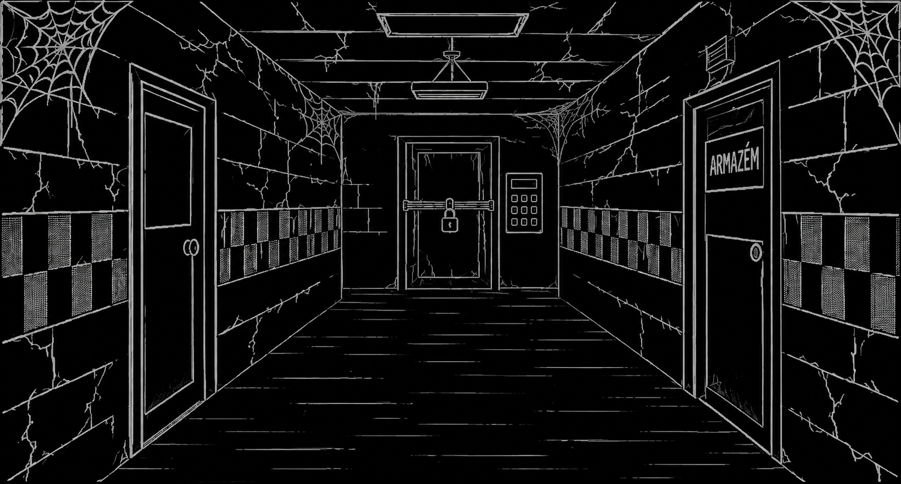

Corredor
O corredor liga os cômodos da casa. Um retrato guarda um fragmento de papel e uma pista sobre a antiga guardiã.
Mais adiante fica o terminal da porta da frente. Os números só aparecem nas câmeras depois que os monitores recebem energia.
Ir à sala de segurançaConhecer a saída